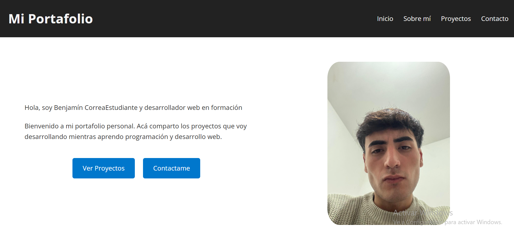
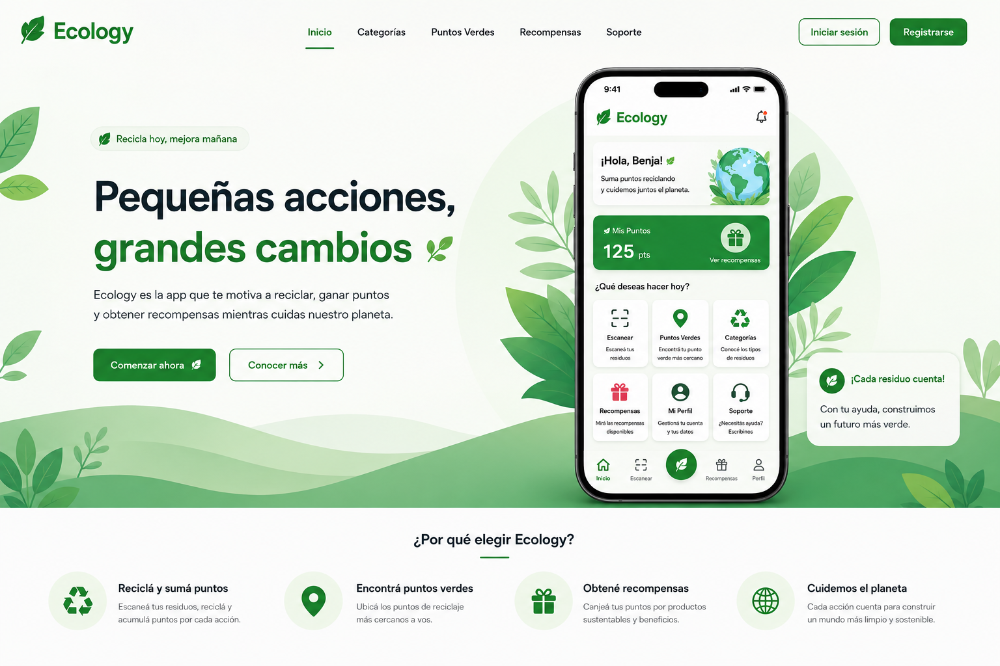
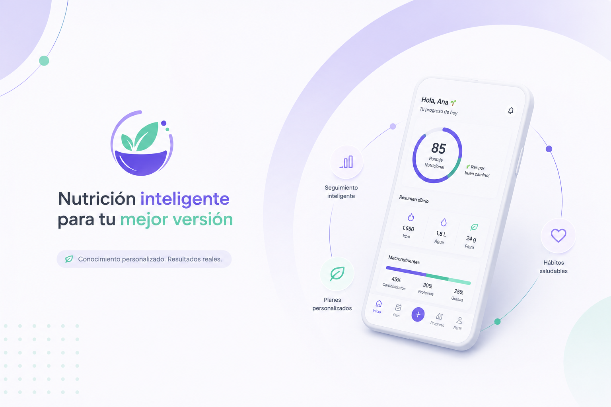

Portafolio Profesional
Sitio web desarrollado para presentar mi perfil profesional, mis proyectos y las tecnologías con las que trabajo. Diseñado bajo un enfoque responsive utilizando HTML y CSS.
- HTML
- CSS
Estos son algunos de los proyectos que desarrollé durante mi proceso de aprendizaje. Cada uno representó una oportunidad para aplicar nuevos conocimientos, mejorar mis habilidades y enfrentar diferentes desafíos en el desarrollo web.

Sitio web desarrollado para presentar mi perfil profesional, mis proyectos y las tecnologías con las que trabajo. Diseñado bajo un enfoque responsive utilizando HTML y CSS.

Aplicación web orientada a fomentar el reciclaje mediante un sistema de puntos, geolocalización de centros verdes clasificación de residuos y recompensas para los usuarios.

Aplicación web orientada a fomentar el reciclaje mediante un sistema de puntos, geolocalización de centros verdes clasificación de residuos y recompensas para los usuarios.